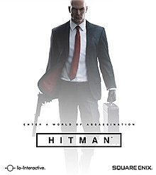

Currently Playing

Hitman is an episodic stealth video game developed by IO Interactive and published by Square Enix for Microsoft Windows, PlayStation 4, and Xbox One. A port for Linux, developed and published by Feral Interactive, was released on 16 February 2017. A version for macOS, also developed and published by Feral Interactive, was released on 20 June 2017. It is the sixth entry in the Hitman series. The game's prologue acts as a prequel to Hitman: Codename 47, while the main game takes place seven years after the events of Hitman: Absolution.

Overwatch is a team-based multiplayer online first-person shooter video game developed and published by Blizzard Entertainment. It was released in May 2016 for Windows, PlayStation 4, and Xbox One. Overwatch assigns players into two teams of six, with each player selecting from a roster of over 20 characters, known in-game as "heroes", each with a unique style of play, whose roles are divided into four general categories: Offense, Defense, Tank, and Support. Players on a team work together to secure and defend control points on a map or escort a payload across the map in a limited amount of time. Players gain cosmetic rewards that do not affect gameplay, such as character skins and victory poses, as they play the game. The game was initially launched with casual play, with a competitive ranked mode, various 'arcade' game modes, and a player-customizable server browser subsequently included following its release. Additionally, Blizzard has developed and added new characters, maps, and game modes post-release, while stating that all Overwatch updates will remain free, with the only additional cost to players being microtransactions to earn additional cosmetic rewards.
Check out my PlayStation profile:
-
Tough4